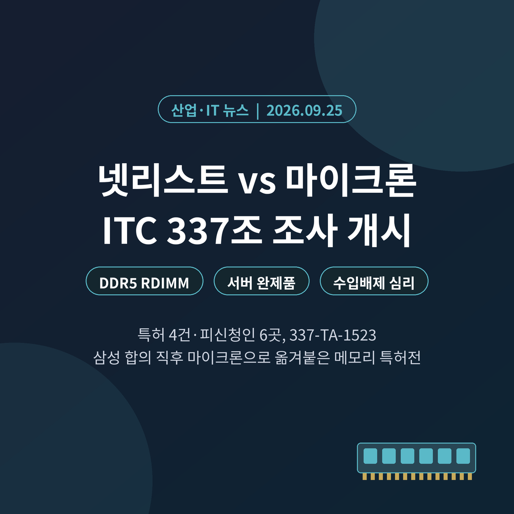
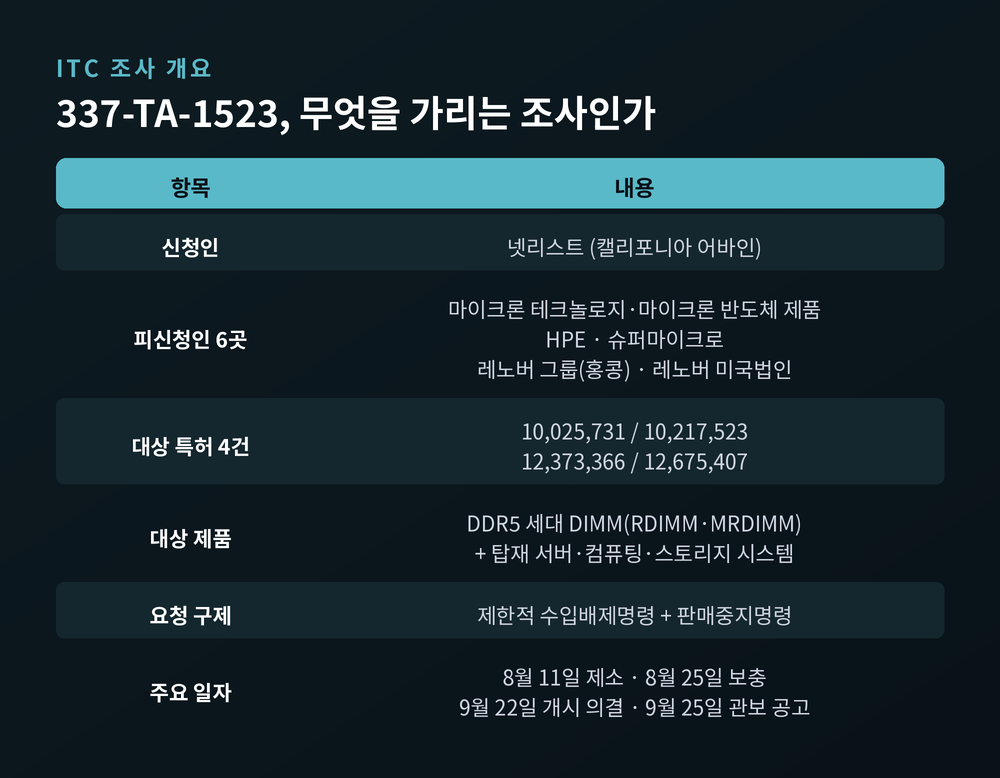
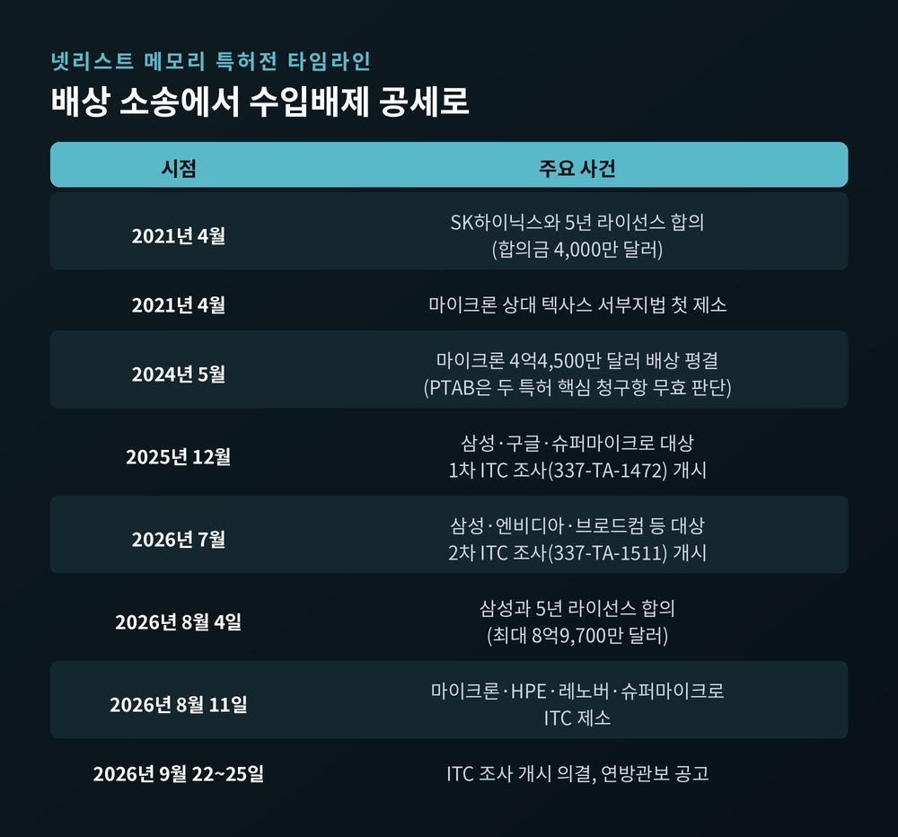
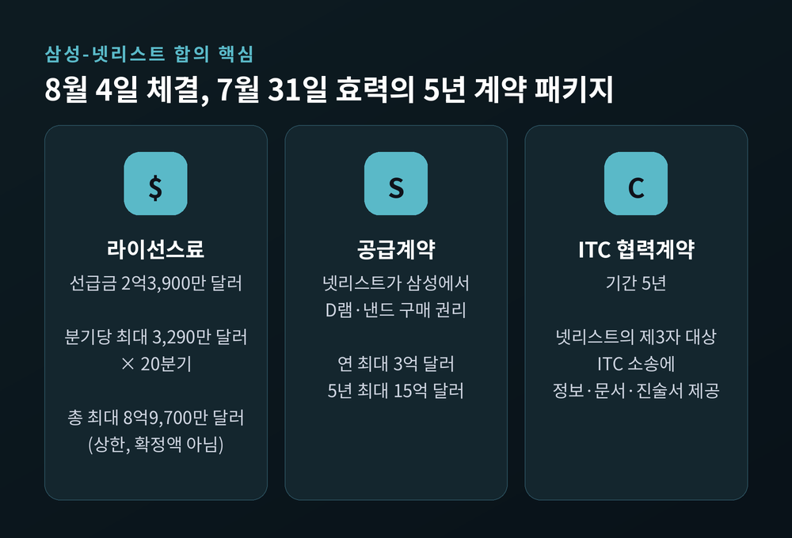
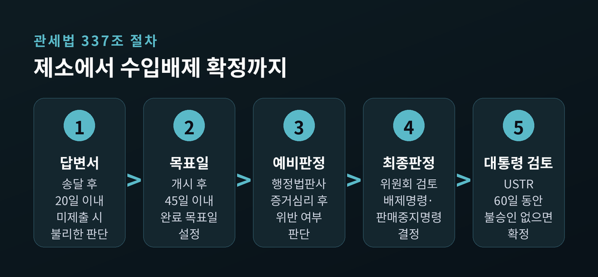
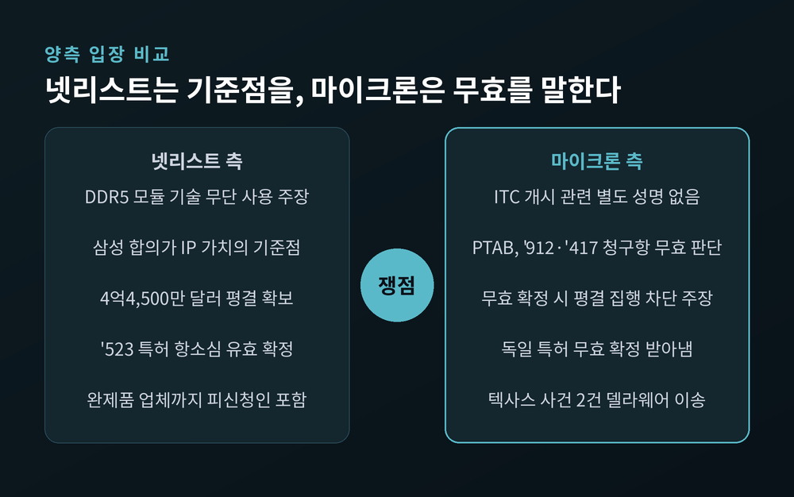
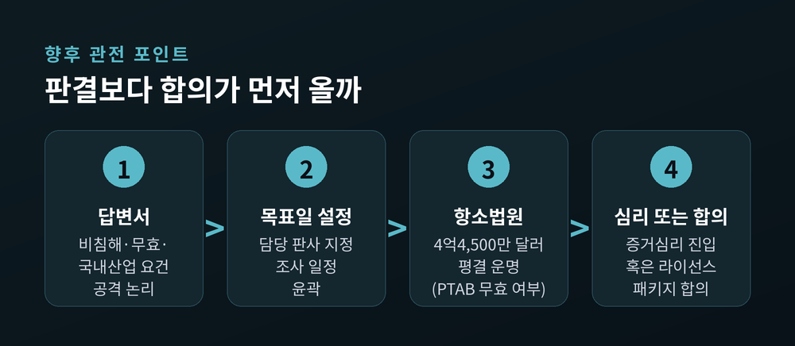

넷리스트 마이크론 ITC 조사 개시, DDR5 서버 수입금지 여부 가린다

오늘은 넷리스트가 마이크론을 상대로 낸 미국 국제무역위원회(ITC) 조사가 공식 개시된 소식을 정리해 보려 합니다. 대상은 AI 서버에 들어가는 DDR5 메모리 모듈과, 그 모듈을 단 서버 완제품입니다. 무슨 일이 있었고, 한국 메모리 업계에는 어떤 의미가 있는지 차례로 짚어 보겠습니다.
세 줄 요약
- ITC가 9월 22일 넷리스트의 신청을 받아들여 마이크론·HPE·레노버·슈퍼마이크로 등 6개 법인을 상대로 관세법 337조 조사(337-TA-1523)를 시작했고, 9월 25일 연방관보에 공고했습니다.
- 넷리스트는 DDR5 RDIMM·MRDIMM에 쓰이는 특허 4건 침해를 주장하며, 해당 제품과 이를 탑재한 서버의 미국 수입을 막아 달라고 요청했습니다.
- 넷리스트는 8월 초 삼성전자와 최대 8억9,700만 달러 규모의 라이선스 합의를 맺었습니다. 이번 조사는 그 '기준점'을 마이크론에도 들이미는 수순으로 읽힙니다.
무슨 일이 있었나
미국 연방관보는 9월 25일자 공고에서 조사 개시 사실을 알렸습니다. ITC가 조사 개시를 명령한 날짜는 9월 22일입니다.
신청인은 캘리포니아 어바인에 본사를 둔 넷리스트입니다. 8월 11일 소장을 냈고, 8월 25일 보충 서면을 더했습니다.
넷리스트가 문제 삼은 특허는 네 건입니다. 미국 특허 10,025,731호, 10,217,523호, 12,373,366호, 12,675,407호입니다. 넷리스트는 이 특허들이 서버용 DDR5 RDIMM과 MRDIMM에 그대로 적용된다고 주장합니다.
피신청인은 여섯 곳입니다. 마이크론 본사와 마이크론 반도체 제품 법인, 서버 제조사인 HPE와 슈퍼마이크로, 그리고 레노버 홍콩 본사와 미국 법인입니다.
넷리스트가 요구한 것은 돈이 아닙니다. 제한적 수입배제명령과 판매중지명령, 즉 침해 제품이 미국 국경을 넘지 못하게 해 달라는 것입니다.

왜 중요한가: 칩이 아니라 '서버'가 걸렸다
이번 조사의 범위는 넓습니다. 공고에 적힌 대상 제품은 DDR5 세대 DIMM만이 아닙니다. 이를 탑재한 서버, 컴퓨팅 시스템, 스토리지 시스템과 그 부품까지 포함됩니다.
예전 메모리 특허 분쟁은 부품 회사끼리의 배상 다툼으로 끝나는 경우가 많았습니다. 지금은 부품을 쓰는 완제품 업체까지 함께 피신청인석에 앉습니다.
글로벌이코노믹은 이를 두고 완제품 통관까지 묶어 마이크론의 미국 공급망을 압박하려는 포석이라는 해석을 전했습니다. 배상금은 시간이 지나면 협상할 수 있지만, 수입 차단은 서버 출하 자체를 멈춰 세울 수 있습니다.
DDR5 RDIMM과 MRDIMM은 AI 서버에 들어가는 주력 메모리 규격입니다. 시장도 민감하게 반응했습니다. 제소 소식이 알려진 8월 12일, 넷리스트 주가는 14.5% 올랐고 마이크론은 장중 4.9%가량, 슈퍼마이크로는 4%가량 떨어졌습니다.
배경 ①: 삼성과의 긴 싸움, 그리고 합의
넷리스트의 ITC 공세는 이번이 처음이 아닙니다. 첫 표적은 삼성전자였습니다.
넷리스트는 2025년 9월 30일 삼성전자와 구글, 슈퍼마이크로를 ITC에 제소했습니다. ITC는 12월 29일 조사(337-TA-1472)를 개시했습니다. 대상은 DDR5 모듈과 HBM에 걸친 특허 여섯 건이었습니다. 흥미롭게도 이번 마이크론 사건의 '731·'523 특허가 여기에도 들어 있었습니다.
2026년 7월 중순에는 두 번째 삼성 조사(337-TA-1511)가 열렸습니다. 이번엔 엔비디아와 브로드컴까지 피신청인에 올랐습니다.
결말은 합의였습니다. 넷리스트가 미국 증권거래위원회에 낸 공시에 따르면, 두 회사는 8월 4일 5년짜리 특허 상호 라이선스를 맺었습니다.
- 삼성은 선급금 2억3,900만 달러를 내고, 2031년 2분기까지 분기마다 최대 3,290만 달러를 추가로 냅니다. 총액은 최대 8억9,700만 달러이며, 확정액이 아닌 상한입니다.
- 넷리스트는 5년간 삼성으로부터 최대 15억 달러어치 D램·낸드를 살 권리를 얻었습니다.
- 삼성은 넷리스트가 앞으로 제3자를 상대로 벌일 ITC 소송에 정보와 문서, 진술서를 제공하기로 했습니다.
마이크론 제소는 이 합의 8일 만에 나왔습니다. C.K. 홍 넷리스트 최고경영자는 9월 24일 조사 개시를 반기며, 삼성 합의가 자사 특허 가치의 "중요한 업계 기준점"을 세웠다고 말했습니다.


배경 ②: 4억4,500만 달러 평결은 흔들리는 중
마이크론과 넷리스트의 분쟁도 역사가 깁니다. 2021년 4월 텍사스 서부지법 제소로 시작해 올해로 5년째입니다.
가장 큰 장면은 2024년 5월 23일입니다. 텍사스 동부지법 배심원단은 마이크론 메모리 모듈이 넷리스트 특허 두 건을 침해했다고 보고, 4억4,500만 달러 배상을 평결했습니다. 고의 침해도 인정했습니다.
그러나 이 평결은 단단하지 않습니다. 미국 특허심판원(PTAB)은 두 특허의 핵심 청구항을 모두 특허받을 수 없다고 판단했습니다. 배상액의 95% 이상인 4억2,500만 달러가 걸린 '912 특허 청구항도 여기에 포함됩니다.
마이크론은 공시에서 항소법원이 PTAB 판단을 확정하면 평결 집행 자체가 막힌다고 밝혀 왔습니다. 9월 9일 열린 연방순회항소법원 변론에서는 재판부가 넷리스트 주장에 의문을 표했다고 로360이 전했습니다.
다만 넷리스트에 불리한 소식만 있는 것은 아닙니다. 이번 ITC 대상 특허 중 '523 특허는 2025년 3월 항소법원에서 유효성을 인정받은 이력이 있습니다. 전적이 엇갈린다는 점은 기억해 둘 만합니다.
337조 조사는 어떻게 흘러가나
ITC 절차는 일반 법원보다 빠릅니다. 넷리스트는 통상 1년 안에 재판 단계에 이른다고 설명합니다. 실제로 첫 삼성 사건은 개시 11개월 만인 11월 23일 증거심리가 잡혀 있었습니다.
큰 흐름은 다섯 단계입니다.
- 피신청인은 송달 뒤 20일 안에 답변서를 내야 합니다. 내지 않으면 반박할 권리를 잃고, 주장된 사실대로 판단될 수 있습니다.
- 수석 행정법판사가 담당 판사를 지정하고, ITC는 45일 안에 조사 완료 목표일을 정합니다.
- 담당 판사가 증거심리를 열고 위반 여부에 대한 예비판정을 내립니다.
- 위원회가 예비판정을 검토해 최종판정과 구제명령을 결정합니다.
- 명령이 나오면 60일 동안 미국무역대표부가 대통령 권한으로 정책 검토를 합니다. 이 기간에 불승인하지 않으면 확정됩니다.
이번 공고에는 눈여겨볼 문구가 하나 있습니다. 위원회는 넷리스트의 '국내산업' 요건을 충실히 심리하라고 주문했습니다. 제3자의 지출에 얼마나 기대는지, 미국 밖 지출은 얼마인지까지 보라고 했습니다.
337조는 특허권자가 미국 안에 실질적인 산업 기반을 갖췄을 때만 수입배제를 허용합니다. 넷리스트의 최근 분기 매출 약 1억980만 달러 가운데 약 1억380만 달러가 제3자 제품 재판매였다는 점을 감안하면, 이 대목이 초기 공방의 핵심이 될 수 있습니다.
공공이익 심리도 명시됐습니다. 담당 판사는 수입배제가 공공이익에 미칠 영향에 대해서도 사실관계를 정리해 위원회에 권고해야 합니다.

한국 메모리 업계에는 무엇이 달라지나
이번 분쟁에서 삼성전자와 SK하이닉스는 바깥에 서 있습니다. 삼성은 합의로 소송 위험을 털었습니다. SK하이닉스는 2021년 4월 넷리스트와 합의금 4,000만 달러의 5년 라이선스를 맺었고, 로스캐피털은 8월 노트에서 SK하이닉스가 라이선스를 확보했다고 밝혔습니다. 다만 계약 갱신 여부는 확인되지 않았습니다.
기회로 보는 시각이 있습니다. HPE와 레노버 같은 서버 제조사는 마이크론 외에 삼성과 SK하이닉스에서도 DDR5 모듈을 받습니다. 마이크론 모듈 수입이 막히면 두 회사 비중이 늘어날 수 있습니다.
위험도 함께 봐야 합니다. 완제품 서버가 조사 대상인 만큼, 통관이 지연되면 한국산 부품의 납품 일정도 함께 밀릴 수 있습니다. 북미 클라우드 증설이 늦어지면 결국 메모리 수요 전체가 영향을 받습니다.
한 가지 더 있습니다. 삼성은 ITC 협력계약에 따라 넷리스트의 다른 소송에 자료를 제공할 수 있는 위치가 됐습니다. 경쟁사 분쟁에 간접적으로 엮이는 구조라, 업계 관계 측면에서 부담이 될 여지가 있습니다.
양측은 무엇을 주장하나
넷리스트의 논리는 분명합니다. 자사가 개발한 메모리 모듈 기술을 마이크론이 허락 없이 쓰며 부당한 경쟁 우위를 얻고 있다는 것입니다. 8월 제소 당시 C.K. 홍 대표가 직접 한 주장입니다. 9월에는 삼성 합의를 특허 가치의 기준점으로 내세웠습니다. 경쟁사가 이미 대가를 치렀다는 점을 협상 카드로 쓰는 셈입니다.
마이크론은 이번 ITC 개시에 대한 별도 성명을 내지 않았습니다. 다만 공시와 그간의 소송에서 일관된 방어선을 보여 왔습니다. 핵심은 특허 무효입니다. PTAB에서 넷리스트 특허의 무효 판단을 여럿 끌어냈고, 독일에서도 넷리스트 특허의 무효 확정을 받아냈습니다. 텍사스 사건 두 건은 재판지 이의를 제기해 델라웨어로 옮겼습니다.
HPE와 레노버, 슈퍼마이크로의 공식 입장은 확인되지 않았습니다. 이들 입장에선 부품 공급사의 분쟁에 완제품 수입이 볼모로 잡힌 셈입니다.

전망: 판결보다 합의가 먼저 올까
앞으로 몇 달 안에 확인할 것은 세 가지입니다.
첫째, 피신청인들의 초기 답변서입니다. 비침해·무효 항변과 함께 국내산업 요건을 어떻게 공격하는지가 드러납니다.
둘째, 항소법원의 4억4,500만 달러 평결 판단입니다. PTAB 무효가 확정되면 넷리스트의 협상력은 눈에 띄게 약해집니다. 반대로 뒤집히면 마이크론의 부담이 커집니다.
셋째, 합의 여부입니다. SK하이닉스는 2021년, 삼성은 2026년에 결국 라이선스와 공급계약을 묶은 패키지로 분쟁을 마무리했습니다. 글로벌이코노믹도 합의로 매듭짓는 경로가 반복돼 왔다고 짚었습니다.
그렇다고 마이크론이 같은 길을 간다고 단정하기는 이릅니다. 마이크론은 무효 다툼에서 이긴 전적이 적지 않습니다. 삼성 합의 금액이 '기준점'이 된다면 오히려 협상 문턱이 높아질 수도 있습니다. 넷리스트가 마이크론에 얼마를 요구하는지는 공개되지 않았습니다.

마지막으로 한 가지만 덧붙이겠습니다.
이번 조사는 메모리 특허전의 무게중심이 배상금에서 통관으로 옮겨 가고 있음을 보여줍니다. 부품 하나의 특허가 서버 한 대, 나아가 데이터센터 증설 일정까지 좌우할 수 있습니다. 넷리스트는 이를 지렛대로 쓰고, 마이크론은 특허의 유효성 자체를 흔들어 맞서고 있습니다.
"AI 서버 공급망의 가장 약한 고리는 때로 공장이 아니라 특허 청구항입니다."
이 싸움이 법정에서 끝날지 협상장에서 끝날지 물으신다면, 저는 1년 뒤 증거심리 전에 답이 나올 가능성에 조금 더 무게를 두겠습니다.